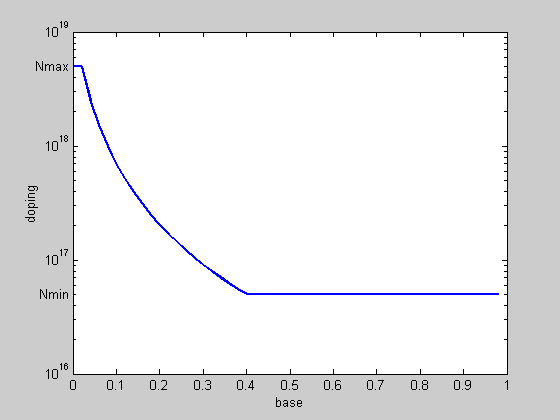

Optimal doping profile optimization
M = 50;
g1 = 0.42;
g2 = 0.69;
Nmax = 5*10^18;
Nmin = 5*10^16;
Nref = 10^17;
Dn0 = 20.72;
ni0 = 1.4*(10^10);
WB = 10^(-5);
C = WB^2/((M^2)*(Nref^g1)*Dn0);
pwi = g2 -1;
pwj = 1+g1-g2;
cvx_begin gp
variables v(M) y(M) w(M)
tau_B = C*w(1);
minimize( tau_B )
subject to
v >= Nmin;
v <= Nmax;
for i = 1:M-1
if( mod(i,100) == 0 ), fprintf(1,'progress counter: %d\n',i), end;
y(i+1) + v(i)^pwj <= y(i);
w(i+1) + y(i)*v(i)^pwi <= w(i);
end
y(M) == v(M)^pwj;
w(M) == y(M)*v(M)^pwi;
cvx_end
figure, clf
nbw = 0:1/M:1-1/M;
semilogy(nbw,v,'LineWidth',2);
axis([0 1 1e16 1e19]);
xlabel('base');
ylabel('doping');
text(0,Nmin,'Nmin ', 'HorizontalAlignment','right');
text(0,Nmax,'Nmax ', 'HorizontalAlignment','right');
disp('Optimal doping profile is plotted.')
Calling SeDuMi: 2058 variables (96 free), 1126 equality constraints
------------------------------------------------------------------------
SeDuMi 1.1 by AdvOL, 2005 and Jos F. Sturm, 1998, 2001-2003.
Alg = 2: xz-corrector, Adaptive Step-Differentiation, theta = 0.250, beta = 0.500
Split 96 free variables
eqs m = 1126, order n = 1175, dim = 3135, blocks = 99
nnz(A) = 4292 + 0, nnz(ADA) = 10120, nnz(L) = 6009
it : b*y gap delta rate t/tP* t/tD* feas cg cg prec
0 : 3.24E-001 0.000
1 : 4.31E+002 1.21E-001 0.000 0.3741 0.9000 0.9000 -1.52 1 1 1.4E+001
2 : 8.78E+001 8.56E-002 0.000 0.7053 0.9000 0.9000 3.43 1 1 4.4E+000
3 : 4.33E+001 4.66E-002 0.000 0.5445 0.9000 0.9000 3.97 1 1 9.7E-001
4 : 3.45E+001 1.80E-002 0.000 0.3873 0.9000 0.9000 2.52 1 1 2.2E-001
5 : 3.04E+001 4.77E-003 0.000 0.2646 0.9000 0.9000 1.79 1 1 4.0E-002
6 : 2.55E+001 1.49E-003 0.000 0.3112 0.9000 0.9000 1.57 1 1 9.7E-003
7 : 2.39E+001 4.98E-004 0.000 0.3349 0.9000 0.9000 1.25 1 1 2.9E-003
8 : 2.33E+001 1.29E-004 0.000 0.2583 0.9000 0.9000 1.12 1 1 7.2E-004
9 : 2.32E+001 2.95E-005 0.000 0.2293 0.9000 0.9000 1.08 1 1 1.6E-004
10 : 2.32E+001 7.73E-006 0.000 0.2623 0.9000 0.9000 1.06 1 1 4.0E-005
11 : 2.32E+001 2.15E-006 0.000 0.2780 0.9000 0.9000 1.03 1 1 1.1E-005
12 : 2.32E+001 2.45E-009 0.000 0.0011 0.8865 0.9000 1.01 1 1 2.7E-006
13 : 2.32E+001 6.49E-010 0.000 0.2654 0.9000 0.8167 1.01 1 1 7.6E-007
14 : 2.32E+001 1.42E-010 0.000 0.2187 0.9073 0.9000 1.00 1 1 1.8E-007
15 : 2.32E+001 3.62E-011 0.000 0.2546 0.9030 0.9000 1.00 1 2 4.7E-008
16 : 2.32E+001 9.40E-012 0.000 0.2599 0.9000 0.9118 1.00 2 2 1.1E-008
iter seconds digits c*x b*y
16 1.4 Inf 2.3157681459e+001 2.3157681472e+001
|Ax-b| = 1.1e-006, [Ay-c]_+ = 2.5E-009, |x|= 2.8e+002, |y|= 1.1e+001
Detailed timing (sec)
Pre IPM Post
4.006E-002 1.382E+000 2.003E-002
Max-norms: ||b||=2.806908e+001, ||c|| = 1.849460e+000,
Cholesky |add|=0, |skip| = 0, ||L.L|| = 18.1311.
------------------------------------------------------------------------
Status: Solved
Optimal value (cvx_optval): +1.5956e-012
Optimal doping profile is plotted.
